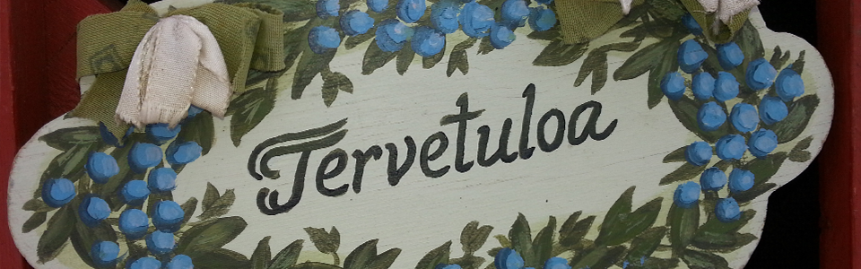
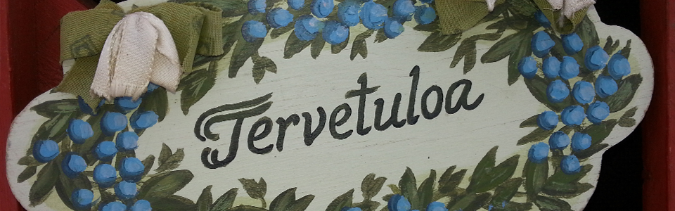
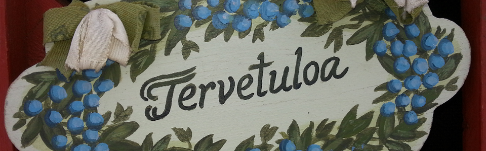

Puh. 0440 214 297
Telkänkatu 2 50190 Mikkeli
pkpirttiry@surffi.fi

Päiväkoti Pirtti on Päiväkotyhdistys Pirtti ry:n ylläpitämä yksityinen päiväkoti Mikkelissä. Päiväkoti on aloittanut toimintansa vuonna 1977. Päiväkoti Pirtti sijaitsee Tikanpellon alueella Tuppuralan kaupunginosassa. Mikkelin kaupunki valvoo päiväkodin toimintaa ja sen toimintaa ohjaavat samat lait ja asetukset kuin kunnallista varhaiskasvatusta. Päiväkodissamme on käytössä yksityisen päiväkotihoidon palveluseteli. Perhe hakee palveluseteliä Mikkelin kaupungilta saatuaan päivähoitopaikan päiväkodista. Varhaiskasvatuksen asiakasmaksut määräytyvät kunnallisten maksumääritysperusteiden mukaan. Kunnalliseen asiakasmaksuun lisätään yksityisen päivähoidon omavastuulisä, joka on kokopäivähoidossa olevilta 30 euroa kuukaudessa. Päiväkoti Pirtissä toimii neljä lapsiryhmää 1-6 – vuotiaille lapsille.
• Nuput, 1-3 -vuotiaat (8 päivähoitopaikkaa)
• Metsätähdet, 3-4 -vuotiaat (8 päivähoitopaikkaa)
• Sinikellot , 4-5 -vuotiaat (14-16 päivähoitopaikkaa)
• Esikot, esikoulu (8-10 esiopetuspaikkaa)
Henkilökuntaan kuuluu kolme lastentarhanopettajaa, kolme lastenhoitajaa sekä avustaja.
Toiminnassamme painotamme lapsikeskeisyyttä, turvallisuutta sekä luonto- ja ympäristökasvatusta.
Päiväkodin aukioloaika on ma-pe 6.30 – 17 .